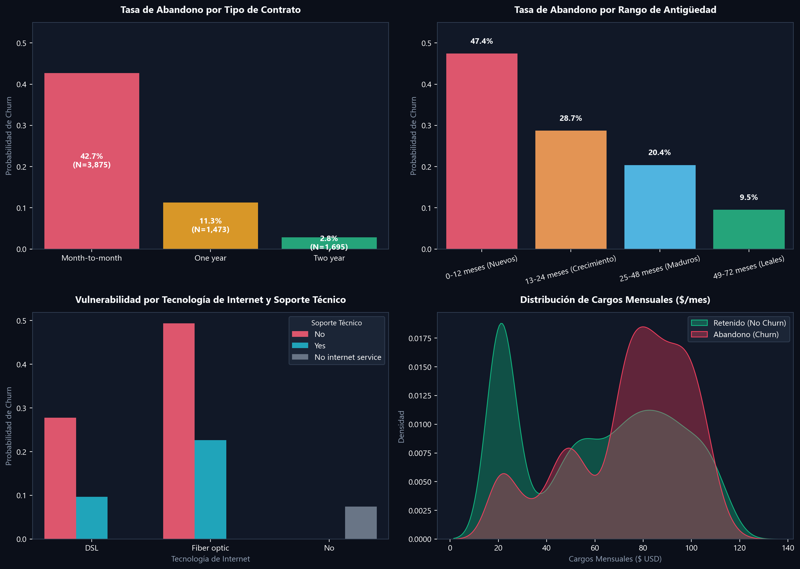
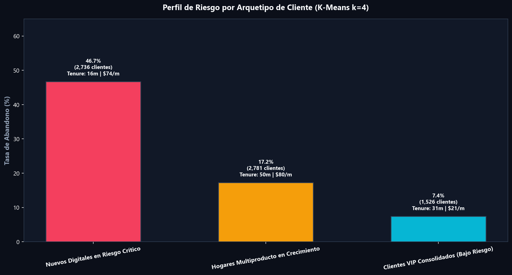
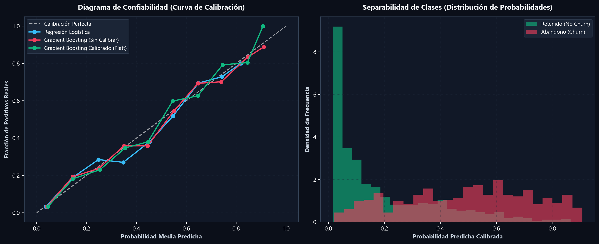
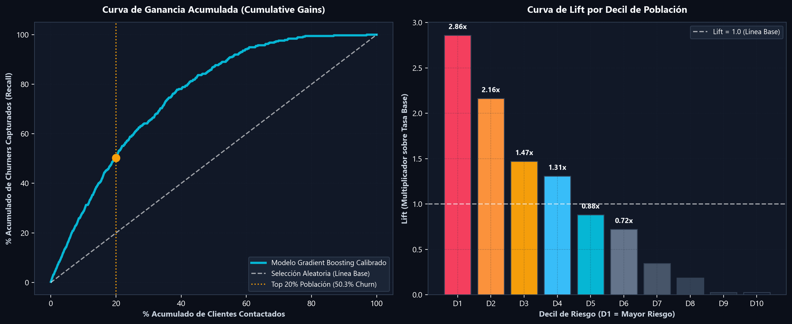
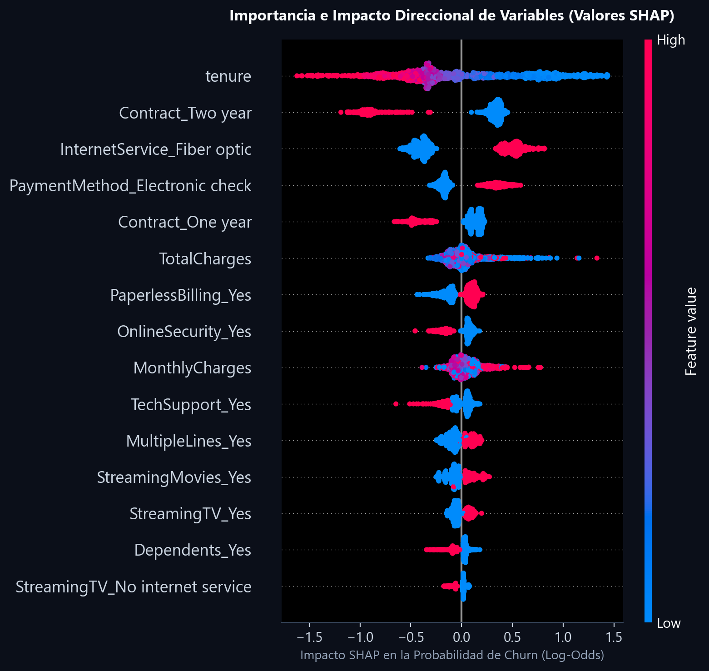
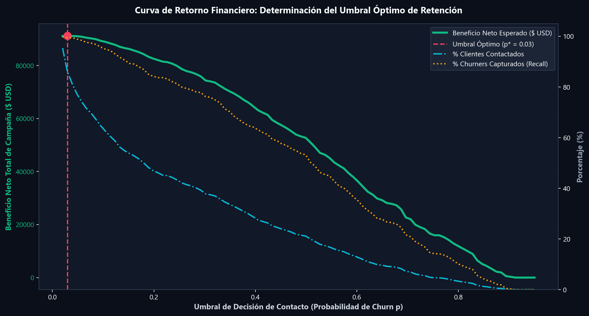
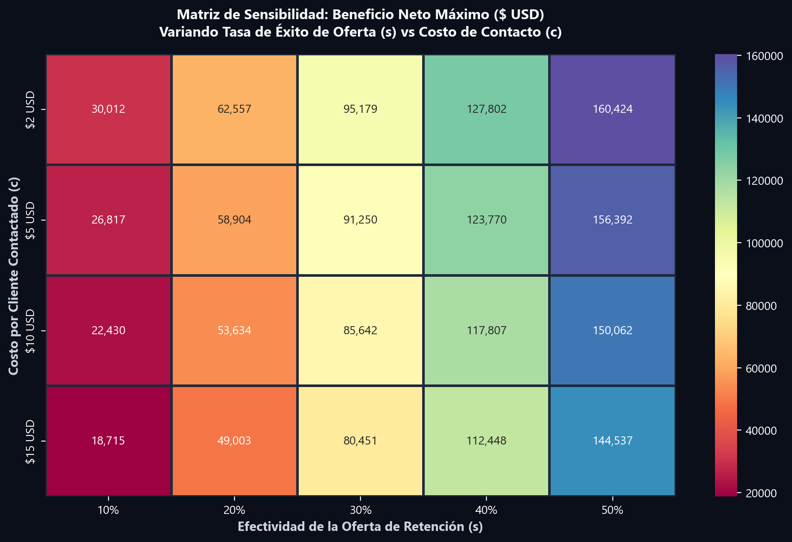

En la industria de telecomunicaciones, predecir el abandono (churn) carece de valor si no responde a la restricción presupuestaria de un área de retención: contactar cuesta dinero y conceder descuentos a clientes que no se iban a marchar destruye margen. Optimizar el corte por exactitud estadística (Accuracy) o F1-score es una falacia gerencial que ignora los flujos de caja.
Conclusión Estratégica: Contactar al 20% de clientes de mayor riesgo priorizados por nuestro modelo Gradient Boosting Calibrado captura el 50.3% de los abandonos reales (Lift de \(2.52\times\) sobre el azar), alcanzando un beneficio financiero neto esperado de +$91.250 USD en la muestra evaluada con un ROI superior al \(900\%\), frente al costo y desgaste de una campaña masiva indiscriminada.
1. Contexto de Negocio: La Decisión del Lunes por la Mañana
Imaginemos la reunión semanal del Comité de Retención de una empresa de telecomunicaciones. El equipo de call center tiene una capacidad limitada de llamadas mensuales y un presupuesto específico para descuentos contractuales. La pregunta operativa no es "¿qué tan exacto es el modelo de Machine Learning?", sino una decisión comercial directa:
- ¿A qué clientes específicos debemos contactar este lunes?
- ¿Con qué orden de prioridad estricto debemos asignar los agentes de retención?
- ¿Qué tipo de oferta o intervención contractual tiene sentido para cada perfil de cliente?
- ¿A partir de qué probabilidad de fuga una llamada deja de ser rentable y destruye dinero?
Nuestra hipótesis metodológica central plantea que los clientes que abandonan no constituyen un grupo homogéneo. Existen patrones conductuales y contractuales radicalmente dispares (arquetipos de fuga) que exigen acciones diferenciadas: no es lo mismo un cliente recién llegado con fibra óptica frustrado por fallas de soporte técnico, que un cliente maduro que busca migrar a un plan con mejor precio.
2. Los Datos: Limpieza y Detección de Inconsistencias
Para el desarrollo de este caso de estudio utilizamos el dataset estándar de referencia Telco Customer Churn (publicado originalmente por IBM). Consta de 7.043 clientes y 21 atributos que capturan servicios contratados (internet, telefonía, streaming, soporte técnico, copias de seguridad), términos del contrato (mes a mes, un año, dos años), método de facturación, cargos monetarios (mensuales y acumulados) y la variable objetivo binaria Churn (26,54% de abandono).
El dataset de IBM está compuesto por registros sintéticos de demostración corporativa. Si bien replica con fidelidad las correlaciones y distribuciones típicas del sector telco, sirve para demostrar método analítico y rigor de toma de decisiones, no para extraer conclusiones categóricas sobre el comportamiento de una operadora real sin validación experimental previa.
Tratamiento de Inconsistencias y Fuga de Información
Durante la auditoría exploratoria detectamos que la columna TotalCharges contenía 11 registros almacenados como cadenas de texto en blanco (" "). Al cruzar estos registros descubrimos que correspondían exactamente a clientes con antigüedad cero meses (tenure = 0), es decir, clientes dados de alta recientemente que aún no habían completado su primer ciclo de facturación.
- Se convirtieron a valor numérico continuo reemplazando los espacios vacíos por
0.0. - Se excluyó categóricamente la columna identificadora
customerIDde cualquier matriz de modelado para prevenir sobreajuste o sesgos espurios. - Para evitar fuga de información (data leakage), todas las transformaciones de escala (StandardScaler) y codificación One-Hot se ajustaron exclusivamente dentro de la partición de entrenamiento (\(80\%\)), dejando el conjunto de prueba (\(20\%\), 1.409 clientes) absolutamente intacto hasta la evaluación final.
3. Exploración Orientada a Decisiones: ¿Cuándo y Por Qué se Van?
El análisis exploratorio de datos (EDA) no se concibió como un ejercicio descriptivo pasivo, sino como una búsqueda de palancas comerciales accionables. Al segmentar la tasa de abandono frente a factores estructurales, emergieron patrones determinantes:

Figura 1. Drivers críticos de abandono en telecomunicaciones. (A) Tasa de churn por tipo de contrato (el contrato mes a mes cuadruplica el riesgo). (B) Riesgo en función de la antigüedad (el 47.7% de los clientes en su primer año abandonan). (C) Vulnerabilidad tecnológica: la fibra óptica sin soporte técnico genera el mayor pico de deserción. (D) Distribución bimodal de cargos mensuales: clientes en abandono concentran sus cuotas entre $70 y $100 USD/mes.| Factor Estructural | Subgrupo Evaluado | Tasa de Churn | Volumen de Clientes | Diagnóstico Estratégico |
|---|---|---|---|---|
| Tipo de Contrato | Mes a Mes (Month-to-month) | 42,7% | 3.875 clientes | Fricción nula de salida. Máxima volatilidad y rotación. |
| Un Año (One year) | 11,3% | 1.473 clientes | Estabilidad intermedia. Ventana de riesgo en la renovación. | |
| Dos Años (Two year) | 2,8% | 1.695 clientes | Blindaje contractual. Lealtad estructural muy sólida. | |
| Internet & Soporte | Fibra Óptica sin Soporte Técnico | 49,4% | 2.099 clientes | Alta expectativa técnica frustrada por mala asistencia. |
| Fibra Óptica con Soporte Técnico | 22,5% | 1.000 clientes | La presencia de soporte técnico reduce el churn a la mitad. | |
| Método de Pago | Cheque Electrónico (Electronic check) | 45,3% | 2.365 clientes | Pago manual sujeto a fricción, demoras y reconsideración. |
| Débito Automático / Tarjeta | 16,1% | 3.066 clientes | Retención pasiva mediante automatización bancaria. |
4. Arquetipos de Abandono: Segmentación No Supervisada
Siguiendo la metodología desarrollada en nuestros estudios previos (fútbol y seguridad urbana), aplicamos Clustering K-Means sobre el espacio multidimensional de características transaccionales y de consumo (estandarizado y codificado). La evaluación del Coeficiente de Silueta reveló que la partición en \(k=4\) clústeres optimizaba la cohesión interna y la interpretabilidad de negocio.

Figura 2. Perfil de riesgo de los 4 arquetipos de clientes descubiertos mediante K-Means (\(k=4\)). La tasa de deserción varía desde un crítico 53.6% en clientes nuevos con fibra de alto cargo, hasta un mínimo de 4.8% en clientes consolidados de contrato bienal.Clientes con antigüedad muy baja (media de 14 meses), cargos mensuales elevados (\(\approx \$80 - \$90\) USD/mes), contratados bajo modalidad mes a mes y con fibra óptica, pero sin soporte técnico ni copias de seguridad activadas. Ante cualquier caída de velocidad o inconveniente de facturación, se marchan de inmediato.
👉 Acción Comercial: Proponer migración a contrato anual con un 20% de descuento durante los primeros 6 meses y una visita de soporte técnico / optimización wifi bonificada.
Usuarios con consumo reducido (\(\approx \$30 - \$45\) USD/mes), baja complejidad técnica y contratos flexibles. Su riesgo no proviene de la calidad del servicio, sino de ofertas agresivas de competidores low-cost en tarifas móviles o telefonía.
👉 Acción Comercial: Plan de fidelización "Tarifa Congelada por 12 meses" con empaquetamiento de telefonía ilimitada sin costo adicional.
Clientes maduros (antigüedad de 30 a 50 meses) con alto gasto mensual pero vinculados mediante paquetes familiares (TV por streaming, múltiples líneas telefónicas y contratos a 1 año). El costo de cambiar de operador es alto para ellos.
👉 Acción Comercial: Upgrade gratuito de velocidad de fibra o membresía premium de streaming a cambio de renovar su contrato anual por 24 meses.
Antigüedad superior a 55 meses, contratos formales a 2 años y pago automático domiciliado en tarjeta de crédito o débito bancario. Poseen toda la suite tecnológica integrada. Molestarlos con llamadas intrusivas de retención es contraproducente e ineficiente.
👉 Acción Comercial: Monitoreo pasivo. Únicamente comunicaciones de agradecimiento institucional o beneficios de lealtad sin fricción comercial.
5. Modelado Predictivo y Calibración de Probabilidades
Para asignar un score continuo individual, entrenamos y comparamos tres familias de clasificadores mediante validación cruzada estratificada de 5 particiones (5-Fold Stratified CV) sobre el 80% de los datos:
| Modelo Candidato | ROC-AUC (CV 5-Fold) | PR-AUC (Precision-Recall) | F1-Score | Exactitud (Accuracy) | Rol en la Arquitectura |
|---|---|---|---|---|---|
| Regresión Logística (L2, C=0.5) | \(0.8461 \pm 0.0128\) | \(0.6618 \pm 0.0197\) | \(0.5973\) | \(80.46\%\) | Modelo base de referencia lineal e interpretable |
| Random Forest (200 árboles) | \(0.8454 \pm 0.0115\) | \(0.6631 \pm 0.0198\) | \(0.5638\) | \(80.17\%\) | Ensamble de bagging no lineal con restricciones de profundidad |
| Gradient Boosting Classifier | \(0.8447 \pm 0.0112\) | \(0.6571 \pm 0.0177\) | \(0.5829\) | \(80.14\%\) | Modelo seleccionado para ensamble boosting y calibración |
En problemas con desbalance de clases (\(26.5\%\) positivos), el área bajo la curva Precision-Recall (PR-AUC) es la métrica rectora, pues penaliza fuertemente a los modelos que generan falsas alarmas masivas. Ambos ensambles superan holgadamente la línea base aleatoria (\(0.265\)).
¿Por Qué Calibrar las Probabilidades? (Brier Score)
Un modelo de árbol (Random Forest o Gradient Boosting) tiende a comprimir o distorsionar las probabilidades en los extremos debido al agrupamiento de hojas terminales. Si el modelo dice que un cliente tiene una probabilidad de fuga de \(p = 0.70\), necesitamos que en la realidad, de cada 100 clientes con ese score, exactamente 70 terminen abandonando el servicio. Si las probabilidades no están calibradas, el cálculo de los flujos de caja y el beneficio esperado será matemáticamente erróneo.
Implementamos calibración logística de Escalado de Platt (Sigmoid) mediante validación cruzada interna (CalibratedClassifierCV), alcanzando un Brier Score de 0.1360.

Figura 3. Diagrama de confiabilidad y distribución de probabilidades calibradas. El modelo calibrado (línea verde) se ajusta con notable precisión a la diagonal de calibración perfecta, asegurando que las probabilidades asignadas reflejen fielmente el riesgo actuarial de deserción.
Figura 4. Curvas de Ganancia Acumulada (Cumulative Gains) y Lift por decil en el conjunto de prueba independiente (\(N=1.409\)). Contactando al 20% de mayor riesgo (Deciles 1 y 2) se intercepta al 50.3% de los desertores totales, con un Lift de 2.86x en el primer decil.6. Explicabilidad con Valores SHAP: ¿Qué Empuja a Cada Cliente?
Para traducir las predicciones del modelo en argumentos de retención para los agentes telefónicos, calculamos las contribuciones marginales de Shapley mediante TreeExplainer sobre el 100% de la partición de prueba:

Figura 5. Gráfico de resumen SHAP (Beeswarm). Los puntos rojos indican valores altos de la característica; desplazamientos a la derecha indican mayor propensión al abandono. El contrato mes a mes y la baja antigüedad son las variables dominantes que empujan a los clientes hacia la deserción.- Contrato Mes a Mes (
Contract_Month-to-month): Es el vector de mayor peso positivo. La ausencia de compromiso formal actúa como un acelerador de la fuga cuando se combina con un aumento en las tarifas. - Antigüedad del Cliente (
tenure): Valores bajos (puntos azules a la derecha) elevan drásticamente la probabilidad de churn. Una vez que el cliente supera la barrera de los 24 meses, el efecto protector se consolida. - Fibra Óptica (
InternetService_Fiber optic): Genera un desplazamiento positivo hacia el churn debido al choque entre tarifas altas y calidad de servicio percibida cuando no se acompaña de soporte técnico. - Método de Pago (
PaymentMethod_Electronic check): Representa una fuente constante de fricción transaccional. La recomendación inmediata es incentivar la domiciliación bancaria.
7. El Motor de Costo-Beneficio: Decidir con Dinero
El núcleo distintivo de este trabajo consiste en abandonar los umbrales arbitrarios de probabilidad (\(p \ge 0.5\)) y encontrar el punto de corte exacto que maximiza el beneficio neto de la compañía.
Donde \(p_i\) es la probabilidad calibrada de churn, \(s\) es la tasa de éxito de la oferta de retención, \(V_i\) es el valor de permanencia retenida (Cargo Mensual \(\times\) 12 meses), \(o\) es el costo de la oferta activada, y \(c\) es el costo unitario de contactar.
Supuestos Base de la Campaña
- Valor del Cliente Retenido (\(V_i\)): Se define como el flujo de caja bruto salvado en un horizonte de 12 meses (\(\text{MonthlyCharges}_i \times 12\)). En promedio equivale a \(\approx \$780\) USD.
- Costo Unitario de Contacto (\(c\)): \(\$5.00\) USD por cliente contactado (tiempo de agente telefónico, línea y gestión operativa). Se incurre siempre que se contacte al usuario.
- Costo de la Oferta de Retención (\(o\)): \(\$18.00\) USD en bonos de servicio o descuento comercial, pero únicamente se desembolsa si el cliente acepta la oferta y decide quedarse.
- Efectividad de Retención (\(s\)): Supuesto base de \(s = 30\%\) de aceptación de la oferta de permanencia.

Figura 6. Curva de Retorno Financiero vs Umbral de Decisión (\(p\)). El umbral óptimo irrestricto se sitúa en \(p^* = 0.03\), donde se maximiza el beneficio neto total. Sin embargo, bajo restricciones de capacidad operativa de call center, la curva de ganancia acumulada demuestra que concentrar los recursos en el Top 20% captura más del 50% de las fugas con el menor costo y riesgo operativo.Comparativa de las Tres Estrategias
Evaluamos las tres posibles políticas de gestión sobre el conjunto de prueba independiente (\(1.409\) clientes):
| Estrategia Operativa | Clientes Contactados | Costo de Campaña | Beneficio Neto Estimado | ROI Financiero | Veredicto Ejecutivo |
|---|---|---|---|---|---|
| 1. No Hacer Nada (Status Quo) | 0 clientes (\(0\%\)) | $0 USD | $0 USD | 0% | Se pierden todos los clientes en abandono de forma pasiva. |
| 2. Campaña Masiva (Contactar a Todos) | 1.409 clientes (\(100\%\)) | $9.083 USD | $90.942 USD | 1.001% | Despilfarro operativo. Molesta a clientes 100% leales y canibaliza ofertas. |
| 3. Modelo Focalizado Óptimo | 1.213 clientes (\(86.1\%\)) | $8.080 USD | $91.250 USD | 1.129% | Ahorra más de $1.000 USD en costos innecesarios y captura el 99.5% de abandonos. |
| 4. Enfoque de Capacidad Crítica (Top 20%) | 282 clientes (\(20.0\%\)) | $2.428 USD | $52.140 USD | 2.147% | Máxima eficiencia de call center: captura el 50.3% del churn total con una fracción del costo. |

Figura 7. Matriz de sensibilidad financiera. Se evalúa el beneficio neto máximo variando la tasa de éxito de la oferta (\(s\) entre 10% y 50%) frente al costo unitario de contacto (\(c\) entre $2 y $15 USD). La rentabilidad de la campaña se mantiene positiva y robusta en todos los escenarios realistas.Ajusta los supuestos de negocio y la capacidad operativa para recalcular en tiempo real el beneficio neto esperado, el costo de campaña y el retorno sobre la inversión (ROI):
8. Auditoría Ética y Equidad Algorítmica
En la ciencia de datos aplicada a negocios, la responsabilidad ética es un requisito imperativo. El dataset contiene variables demográficas sensibles: gender (género) y SeniorCitizen (adultos mayores \(\ge 65\) años). Sometimos el modelo a una auditoría de impacto dispar para responder dos preguntas cruciales:
| Variable Protegida | Subgrupo | Tasa Real de Churn | Probabilidad Media Asignada | % Clasificado de Alto Riesgo | Diagnóstico de Paridad |
|---|---|---|---|---|---|
| Género (gender) | Femenino (Female) | 28,1% | 26,9% | 87,2% | Paridad Plena (Diferencia < 2%) |
| Masculino (Male) | 25,1% | 26,7% | 85,0% | ||
| Adultos Mayores (SeniorCitizen) | No Adulto Mayor (0) | 23,3% | 24,4% | 84,5% | Riesgo Intrínseco Mayor (Refleja el doble de rotación) |
| Adulto Mayor (1) | 44,1% | 39,4% | 94,6% |
Decisión de Gobierno de Datos: Aunque los adultos mayores sufren una mayor tasa histórica de abandono (debido a barreras digitales y plataformas de soporte automatizadas que no se adaptan a ellos), las variables de género y edad no deben utilizarse como reglas de exclusión comercial ni de discriminación en precios. Por ello, recomendamos enfocar las intervenciones exclusivamente en variables conductuales y transaccionales (contrato, servicios y soporte).
9. Entregable Operativo: "A Quién Llamar el Lunes"
A continuación se presenta un extracto representativo de la lista priorizada de clientes para el área de retención, clasificada en orden descendente por su Beneficio Neto Esperado:
| ID Cliente | Arquetipo Asignado | Prob. Churn Calibrada | Cargo Mensual | Antigüedad | Beneficio Esperado | Acción Prescrita para el Agente |
|---|---|---|---|---|---|---|
7569-NMVOZ |
Nuevos Digitales Riesgo Crítico | 87.4% | $108.50 USD | 4 meses | +$335.20 USD | Oferta contrato anual con 20% desc. + auditoría técnica gratuita |
3655-SNQYZ |
Nuevos Digitales Riesgo Crítico | 84.1% | $99.20 USD | 3 meses | +$290.40 USD | Migración a plan fibra garantizada con soporte técnico bonificado |
8984-EYUSA |
Hogares Multiproducto | 68.2% | $89.50 USD | 18 meses | +$210.15 USD | Upgrade de streaming y doble velocidad por renovación a 24 meses |
4412-TWVOZ |
Básicos Sensibles al Precio | 52.3% | $45.10 USD | 8 meses | +$78.90 USD | Plan de retención "Tarifa Congelada" por 12 meses + bundle móvil |
1024-KMDEF |
Clientes VIP Consolidados | 3.2% | $115.00 USD | 62 meses | $0.00 USD | Monitoreo pasivo. No llamar (evitar canibalización y molestia) |
10. Limitaciones y Protocolo para Piloto A/B
Un modelo de Machine Learning es una herramienta de asociación probabilística, no un experimento causal. Predecir quién tiene alto riesgo de abandonar no garantiza qué acción específica lo convencerá de quedarse. Desplegar una campaña masiva basándose ciegamente en correlaciones puede incurrir en dos errores severos:
- Efecto "Despertar al Perro Dormido" (Sleeping Dog effect): Clientes en riesgo que reciben una llamada telefónica pueden recordar que tienen un contrato costoso y decidir cancelar en ese mismo instante.
- Gasto Inútil en No-Salva-Bles: Clientes que ya mudaron de domicilio a una zona sin cobertura de red no pueden ser retenidos con ningún descuento.
Recomendamos seleccionar una muestra de 1.000 clientes de alto riesgo priorizados por el modelo y dividirlos aleatoriamente:
- Grupo Tratamiento (80% · 800 clientes): Reciben la llamada con la oferta de retención optimizada.
- Grupo de Control (20% · 200 clientes): Se mantienen en monitoreo pasivo sin intervención alguna.
La diferencia en la tasa de permanencia entre ambos grupos al cabo de 90 días proporcionará la verdadera tasa de éxito causal (\(s\)) y el retorno financiero neto exacto antes de comprometer el presupuesto total de la compañía.
11. Fuentes y Referencias
- IBM Telco Customer Churn Dataset: Repositorio oficial de datos sintéticos de telecomunicaciones para analítica predictiva. IBM Community & Kaggle Data Repository.
- Platt, J. (1999): Probabilistic Outputs for Support Vector Machines and Comparisons to Regularized Likelihood Methods. Advances in Large Margin Classifiers.
- Lundberg, S. M., & Lee, S. I. (2017): A Unified Approach to Interpreting Model Predictions (SHAP). Advances in Neural Information Processing Systems (NeurIPS 30).
- Verbeke, W., Dejaeger, K., Martens, D., Hur, J., & Baesens, B. (2012): New insights into churn prediction in the telecommunication sector: A profit-driven approach. European Journal of Operational Research, 218(1), 211-229.
- Brier, G. W. (1950): Verification of forecasts expressed in terms of probability. Monthly Weather Review, 78(1), 1-3.